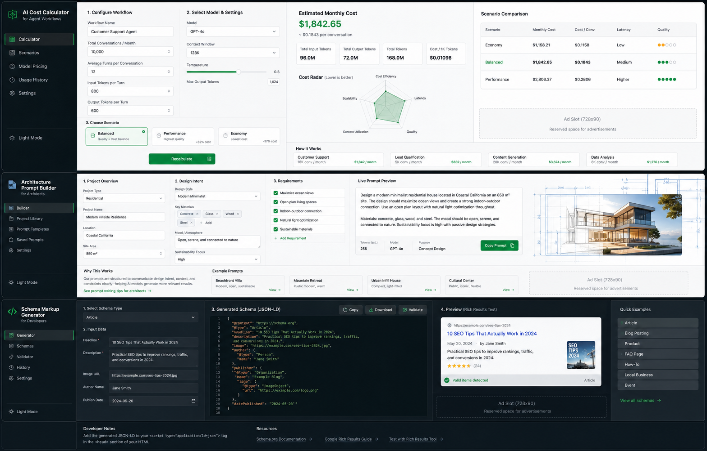

Indexable SaaS sections.
Stored in this browser.
Auto ads script and account meta installed.
Outputs move into reports and workspace.

Product Visual System
The interface direction is generated before buildout and kept inside the repository for visual QA.
Each tool uses the same SaaS navigation pattern with domain-specific calculator, builder, search, or checklist behavior.
Inputs
81 / 85Use Cases
Built for repeat workflows, not one-off thin content.
Limits
Every generated result needs professional review before publication or project issue.
FAQ
Short support answers for the SaaS pilot.
Advertisement